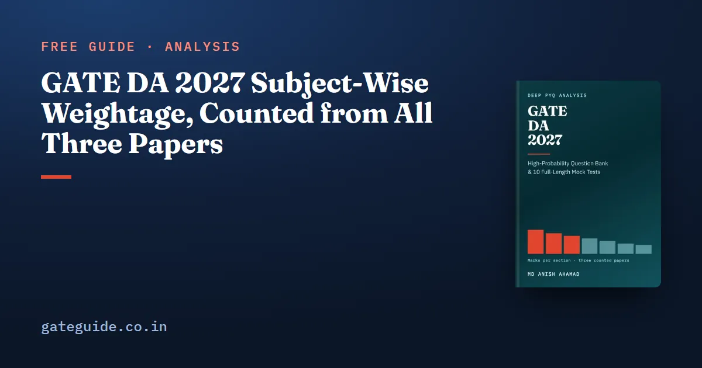

GATE DA 2027 Subject-Wise Weightage, Counted from All Three Papers

Counted question by question across every GATE DA paper there has been — 2024, 2025 and 2026, 195 questions and 300 marks — Probability and Statistics is the largest technical section at a mean of 18.3 marks. Programming, Data Structures and Algorithms follows at 16.0 and Machine Learning at 13.7. General Aptitude is exactly 15 in every paper.
In this guide
Those means come with a warning attached. Three papers are three observations, and in two sections the spread between them is wider than the mean is useful. This guide prints both, and says plainly what three papers can and cannot tell you.
Key takeaways
- The DA record is three papers, one a year, each set by a different institute. There is nothing before 2024.
- Every count closes: 65 questions, 100 marks, 30 one-mark and 35 two-mark questions, General Aptitude at 15, with the marks and question type of every row taken from the official answer key.
- Probability and Statistics (18.3), Programming (16.0) and Machine Learning (13.7) carry a combined mean of 48.0 of the 85 technical marks.
- Database Management and Warehousing ran from 7 to 18 marks, and Calculus and Optimization from 11 to 2. Plan for the range, not the mean.
- No counted question falls outside the 2027 syllabus, so all three papers are usable as they stand.
The counted table
Technical marks by section in each paper, with the three-paper mean, the range and each section's share of the 255 technical marks set so far.
| Section | 2024 | 2025 | 2026 | Mean | Range | Share of 255 |
|---|---|---|---|---|---|---|
| 1. Probability and Statistics | 15 | 19 | 21 | 18.3 | 15–21 | 21.6% |
| 4. Programming, Data Structures and Algorithms | 20 | 14 | 14 | 16.0 | 14–20 | 18.8% |
| 6. Machine Learning | 15 | 12 | 14 | 13.7 | 12–15 | 16.1% |
| 5. Database Management and Warehousing | 7 | 11 | 18 | 12.0 | 7–18 | 14.1% |
| 2. Linear Algebra | 10 | 12 | 8 | 10.0 | 8–12 | 11.8% |
| 7. Search, logic and reasoning under uncertainty | 10 | 6 | 8 | 8.0 | 6–10 | 9.4% |
| 3. Calculus and Optimization | 8 | 11 | 2 | 7.0 | 2–11 | 8.2% |
| General Aptitude | 15 | 15 | 15 | 15.0 | 15–15 | — |
The section numbers are the official 2027 syllabus's own. Section 7 is the one that lists search, logic and reasoning under uncertainty; it is named here by those three topics.
How the papers were counted
Each of the 195 questions was read from the organising institute's question paper. Its marks, its type (MCQ, MSQ or NAT) and its key came from that year's official answer key and nothing else, never from the paper's layout or from a published weightage table. Each question was then placed in a section of the 2027 syllabus, because that is the syllabus you will sit.
A count was accepted only if it closed: 65 questions, 100 marks, 30 one-mark and 35 two-mark questions, and General Aptitude at 10 questions and 15 marks. All three close. One question was awarded to everyone: the 2024 key marks GATE 2024, Q.59, a conditional-expectation question, as marks to all, and it is counted as the two Probability marks it was set as.
Three facts about this base are worth having before you read any DA weightage table:
- There is nothing before 2024. The DA paper did not exist earlier.
- One paper a year. The official keys record a single session each — Session 1 in 2024, Session 5 in 2025, Session 8 in 2026 — so a year and a question number identify a question completely.
- Nothing has to be discounted. Every one of the 165 technical questions sits on a phrase the 2027 syllabus names. The count's bucket for material outside the 2027 syllabus is empty in all three papers.
Read the range before the mean
With three papers, a mean is the average of three numbers, and in some sections none of the three is near it.
Database Management and Warehousing went 7, 11, 18 — five, seven and eleven questions. In 2026 it was the second-largest technical section. A candidate who planned on the 2024 figure would have prepared for eleven marks fewer than 2026 actually set.
Calculus and Optimization went 8, 11, 2. In 2026 it set two questions, GATE 2026, Q.27 and Q.35, both at one mark. Its mean of 7.0 is four marks below one paper and five above another.
Machine Learning is the opposite case: 15, 12, 14, the narrowest range of any technical section. Linear Algebra (8 to 12) and Section 7 (6 to 10) are also comparatively tight.
Programming, Data Structures and Algorithms led the whole paper in 2024 with 20 marks, then settled at 14 in both later papers. With three observations there is no telling which of those is typical.
How different are the three papers?
Setting each paper against each other one and adding up the absolute differences in technical marks, section by section:
| Pair of papers | Difference, marks out of 85 |
|---|---|
| 2024 against 2025 | 26 |
| 2025 against 2026 | 26 |
| 2024 against 2026 | 34 |
The largest single moves were Calculus and Optimization, down 9 from 2025 to 2026; Database Management, up 7 over the same step; and Programming, down 6 from 2024 to 2025. Even the order changes: the largest technical section was Programming in 2024 and Probability and Statistics in 2025 and 2026, and the second-largest in 2026 was Database Management, which had been the smallest in 2024.
The frame of the paper is fixed — 65 questions, 100 marks, General Aptitude at 15 — but the division of the 85 technical marks is redrawn every year, and by a lot.
Why no trend is claimed here
Two sections moved the same way at both steps: Probability and Statistics (15, 19, 21) and Database Management (7, 11, 18). That looks like a pattern, and it may not be one.
Deal any three different numbers into a random order and they come out rising at both steps or falling at both steps one time in three. Across seven sections, that makes two or three expected to look like a trend by chance alone. The record shows two. Three papers cannot tell a trend from that, so this guide does not claim one in either direction — not that Probability is growing, and not that Calculus is shrinking.
The organising institute does not help either. GATE 2027 is set by IIT Madras, and IIT Madras has never set a DA paper: it last organised GATE in 2019, five years before DA existed. The organising institute guide covers what changes with the institute and what does not.
The question types differ by section
Pooled over the three papers, the 165 technical questions split 75 MCQ, 44 MSQ and 46 NAT. No section is average.
| Section | Questions | MCQ | MSQ | NAT |
|---|---|---|---|---|
| Probability and Statistics | 34 | 16 | 4 | 14 |
| Programming, Data Structures and Algorithms | 31 | 15 | 9 | 7 |
| Machine Learning | 27 | 13 | 6 | 8 |
| Database Management and Warehousing | 23 | 10 | 6 | 7 |
| Linear Algebra | 19 | 8 | 8 | 3 |
| Section 7 | 17 | 10 | 5 | 2 |
| Calculus and Optimization | 14 | 3 | 6 | 5 |
Linear Algebra (8 of 19) and Calculus (6 of 14) are set as multiple-select far more than the paper as a whole, and an MSQ gives nothing for a partly right answer. Probability is the most numerical section, with 14 NATs in 34 questions — practise those to a number, with the on-screen calculator rather than a handheld one. Section 7 is the only technical section with more one-mark than two-mark questions, 10 against 7. All 30 General Aptitude questions were MCQs.
Where the count needed a judgement
DA overlaps itself. A naive Bayes question is also a Bayes' theorem question; a PCA question is also an eigenvalue question. Of the 165 technical questions, 23 record a second section they could have gone to, carrying 34 of the 255 marks, and 13 of those 23 have Machine Learning on one side of the line.
Six were not settled by any boundary rule and are counted at their lean. Moving all six to their alternatives at once changes no section's mean by more than 0.7 of a mark — Probability goes to 18.0, Programming to 15.3, Linear Algebra to 10.7 — and leaves the order of the seven sections exactly as it is. The judgements matter to individual questions. They do not change the table.
How to use these numbers
- Work the sections in mark order: Probability and Statistics, Programming, Machine Learning, Database Management, Linear Algebra, Section 7, then Calculus and Optimization.
- Do not leave General Aptitude to the last month. It is 15 marks in every paper, more than any technical section bar the top two has averaged. The General Aptitude guide covers it.
- Plan for the range. Database Management has been 7 and 18; Calculus has been 11 and 2. Your paper draws one value from each, and three papers have probably not yet shown the full width.
- Prepare the mathematics and Machine Learning together, because 13 of the 23 boundary questions have Machine Learning on one side, and 12 of those 13 have a mathematics section on the other.
If you are still choosing between papers, the GATE CS vs GATE DA comparison sets the two syllabi side by side.
This guide gives the section totals. The GATE DA 2027 book breaks every section into topic groups with the question numbers behind each, and turns the count into 907 questions with worked solutions — 257 in the subject chapters and 650 across 10 full mock tests — in 614 pages.
Frequently asked questions
Which subject has the highest weightage in GATE DA?
Probability and Statistics. Across the three counted papers it carried 15, 19 and 21 marks, a mean of 18.3 and 55 of the 255 technical marks set so far. Programming, Data Structures and Algorithms is second at a mean of 16.0, and it was the largest section in 2024, with 20 marks against 15.
How many marks is General Aptitude in GATE DA?
Exactly 15 marks in all three papers, from ten questions, five worth one mark and five worth two. All thirty General Aptitude questions set so far were single-answer multiple-choice questions, so every one of them carried negative marking. It is the only block of the paper whose size has not moved at all.
Is the GATE DA weightage stable from year to year?
Not at section level. Adding up the section-by-section differences in technical marks, 2024 and 2025 differ by 26 marks out of 85, 2025 and 2026 by 26, and 2024 and 2026 by 34. Machine Learning is the steadiest section, between 12 and 15 marks. Database Management and Warehousing has run from 7 to 18.
Can I skip Calculus and Optimization for GATE DA 2027?
The record argues against it. The section carried 8 marks in 2024 and 11 in 2025 before falling to 2 in 2026, so its mean of 7.0 describes none of the three papers. Its syllabus is short, and its methods, such as derivatives, convexity and limits, also appear inside Machine Learning and Probability questions counted elsewhere.
How many previous year papers are there for GATE DA?
Three. The DA paper was first set in 2024 and each year has had one paper, set by IISc Bengaluru in 2024, IIT Roorkee in 2025 and IIT Guwahati in 2026. That is 195 questions and 300 marks in total. A question labelled as a DA previous-year question from before 2024 comes from some other paper.
Sources
- GATE 2027 official website (IIT Madras)
- GATE 2027 DA syllabus (IIT Madras)
- GATE 2024 DA question paper (archived by IIT Guwahati)
- GATE 2024 DA final answer key (archived by IIT Guwahati)
- GATE 2025 DA question paper (IIT Roorkee)
- GATE 2025 DA answer key (IIT Roorkee)
- GATE 2026 DA question paper (IIT Guwahati)
- GATE 2026 DA answer key (IIT Guwahati)
Dates, fees and the syllabus are set by the GATE 2027 organising institute and can change. Always confirm at gate2027.iitm.ac.in.